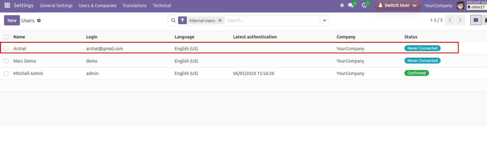
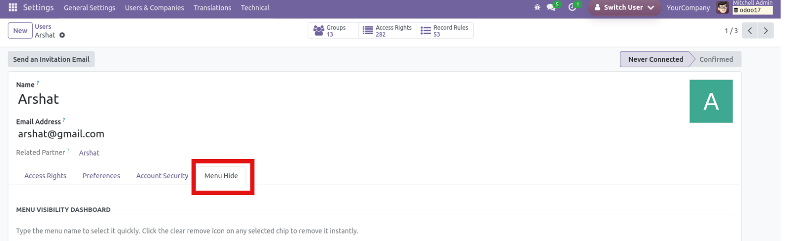
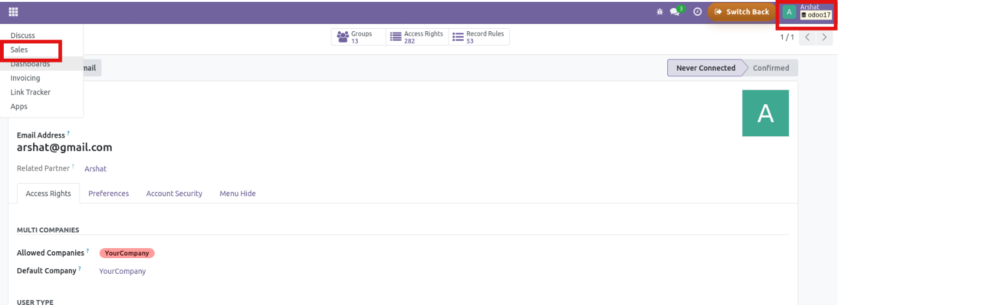
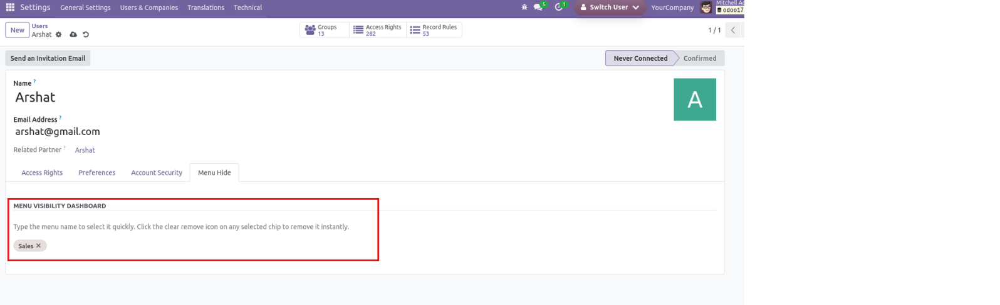
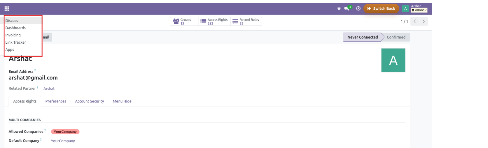

Menu Hide User Wise
Configure user-specific menu visibility from the user form and hide selected Odoo menus or submenus instantly, without changing the full security structure for every user.

Why Use Menu Hide User Wise?
A focused admin utility for teams that want cleaner navigation, reduced menu noise, and user-specific backend visibility without redesigning standard access rights.
Hide menus user by user
Select exactly which menu or submenu should disappear for one user, while other users continue to see their normal navigation.
Work directly from the Menu Hide tab
Administrators can open the user form, move to the Menu Hide tab, and configure restrictions from a single familiar place.
Fast colorful selection flow
Use the quick tag-based input to search menus, select them easily, and remove any chosen item in one click.
Verify the result immediately
Save the user and confirm that hidden menus no longer appear in the final interface for that account.
Core Workflow
Open the internal user record, switch to the Menu Hide tab, search and select the menus to block, save the form, and Odoo will stop showing those menus for that specific user session.
Screenshots
Review the full admin flow from user selection to final menu hiding validation.
Open The Internal User To Configure

Menu Hide Tab On The User Form

Switch To The User And Verify Hidden Menus

Selected Menu Chips In The Dashboard

Final Result With Menu Removed

Follow these steps to configure menu visibility user-wise in your Odoo database.
1. Install The Module
Install Menu Hide User Wise from Apps in your Odoo 17 database.
2. Open A User Record
Go to Settings > Users & Companies > Users and open the user you want to configure.
3. Select Hidden Menus
In the Menu Hide tab, search and select the menus or submenus that should be hidden for that user.
4. Save Changes
Save the user record. The selected menu items are now registered as hidden for that specific user.
5. Validate The User View
Log in as that user or switch to the user session and confirm the chosen menus no longer appear.
FAQs
Common questions about user-wise menu visibility in Odoo.
Can I hide both menu items and submenus?
Yes. The module works for parent menus as well as deeper submenu entries.
Does this change standard access rights?
No. It only controls menu visibility for selected users. Your normal Odoo groups and record permissions remain unchanged.
Is it useful for simplifying the backend?
Yes. It is especially useful when you want users to focus on only the menus relevant to their daily work.
Can administrators update hidden menus later?
Yes. Administrators can reopen the user record, add more menus, or remove existing selections at any time.